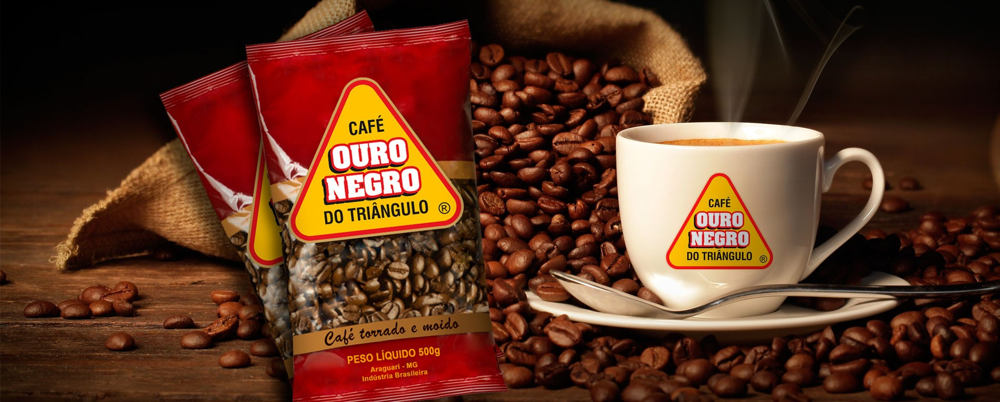

Inaugurada em 2002, nossa cafeteria preza pela qualidade do café através de grãos selecionados.
Essa qualidade nos permitiu ser reconhecidos como "A melhor cafeteria de Maringá", de acordo com a
revista Maringá News. Variando desde um pingado simples até um cappucino com chantilly, nosso
completo cardário te fornecerá diversas opções para aquela doce de cafeína diária! Venha nos visitar!
Menu
Preços
| Produto | Preço |
|---|---|
| Pingado simples | R$ 2,00 |
| Pingado duplo | R$ 3,50 |
| Leite Macchiato | R$ 6,00 |
| Mocaccino | R$ 9,00 |
| Cappuccino |